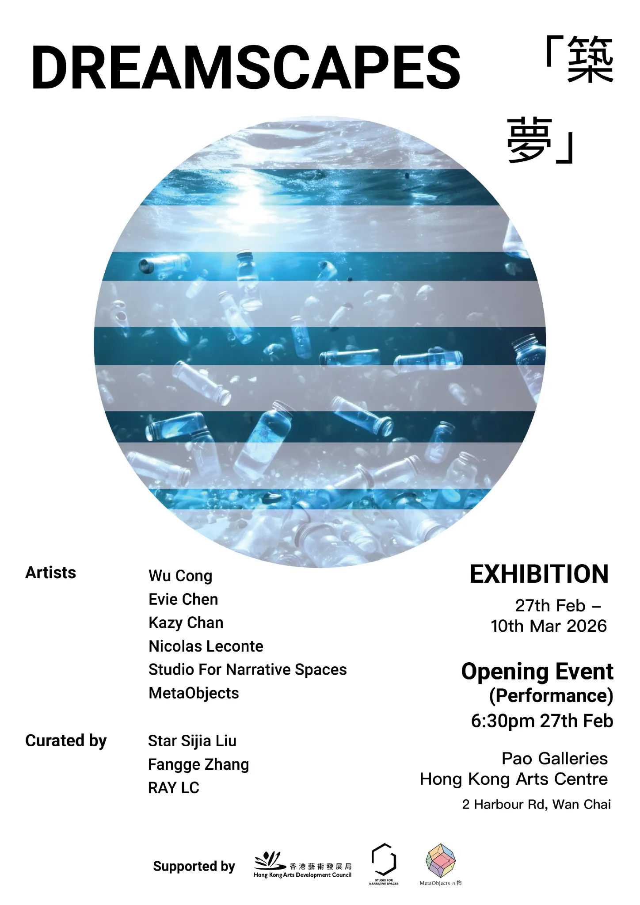
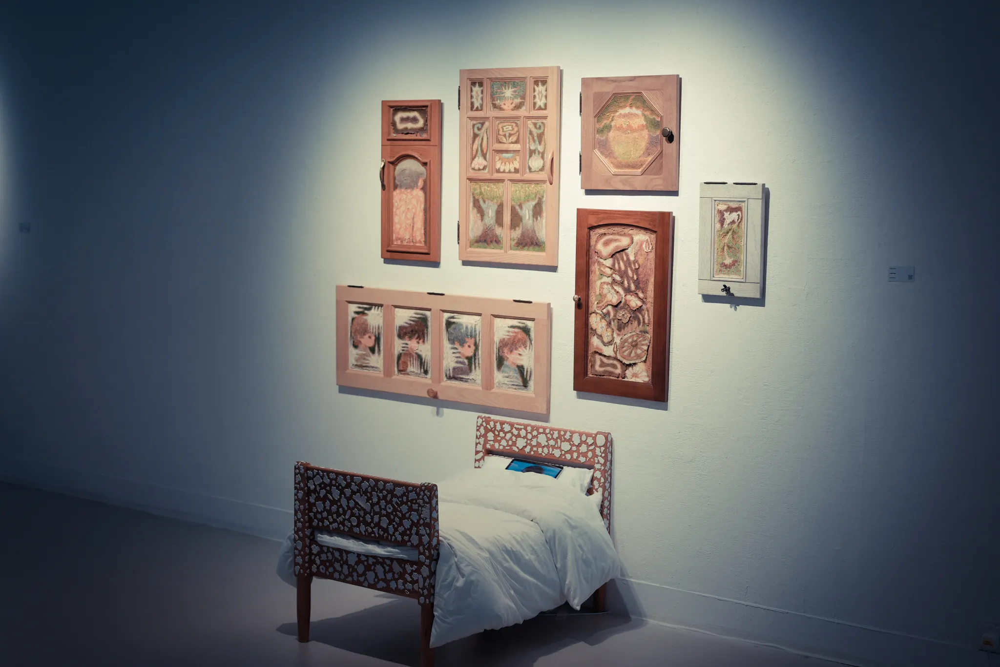
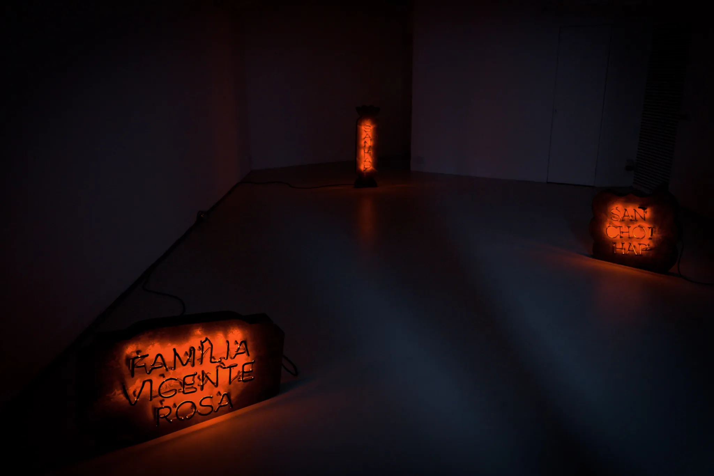
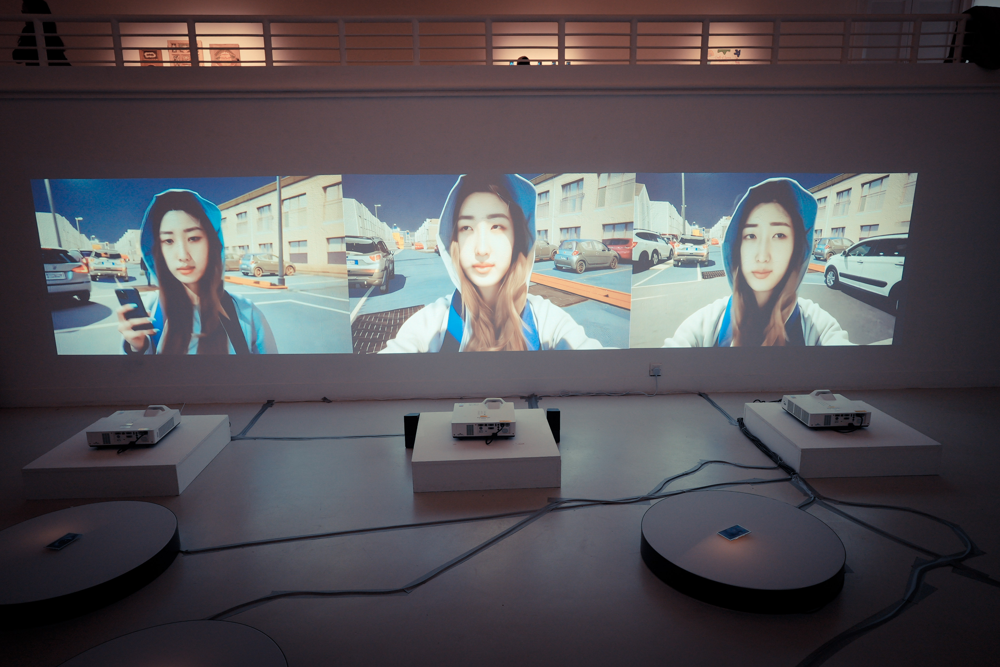
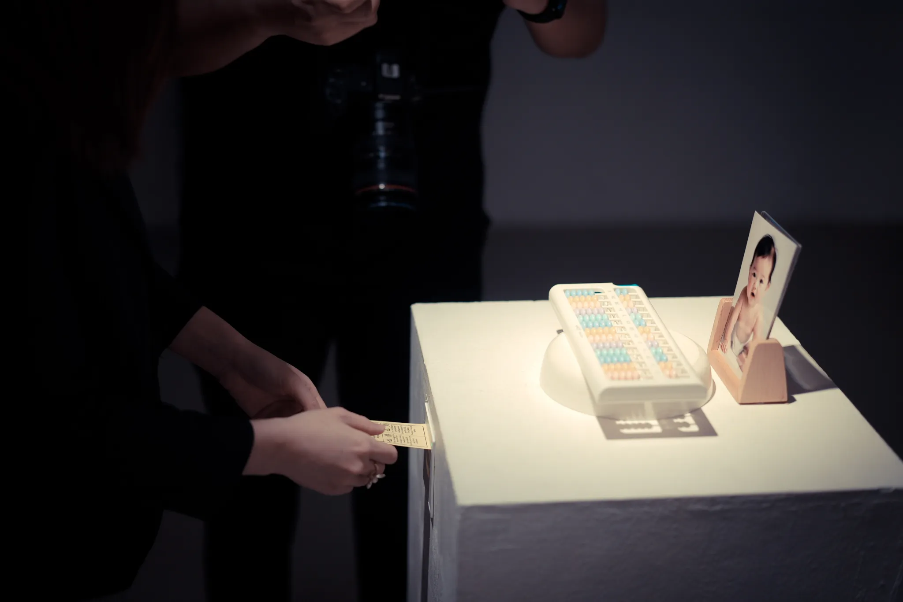
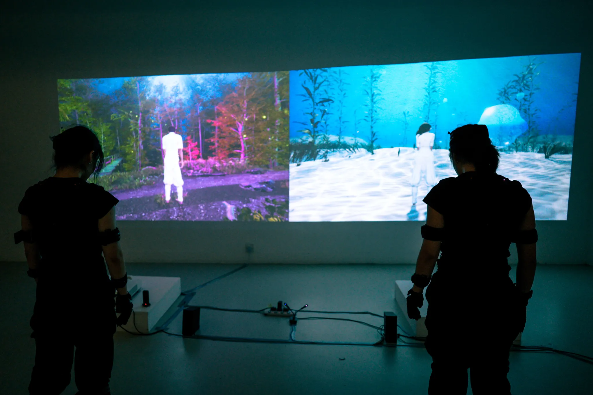
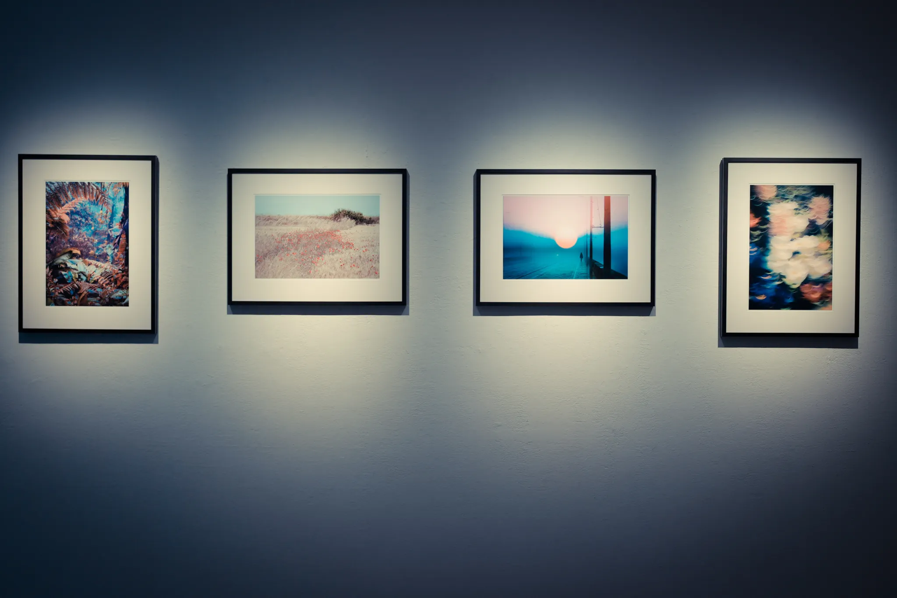

DREAMSCAPES
Exhibition
2026/03
Pao Galleries, Hong Kong Arts Centre
Dreams are among the oldest and most unconscious visual illusions experienced by humans. Dreams are not fantasies but echoes of creativity, insight, and the subconscious. When we fall into dreams, everything becomes either softer or sharper than in real life, and the time boundaries gradually blur into a realm unbounded by the tangible world. It allows the dreamer to transcend the limitations of space and time, encountering both the past and future. Dreamscapes are boundless, free from the rules and logic of reality, allowing the dreamer to creatively construct her own world. Dreams therefore have always been a source of intrigue and inspiration. Modern science and technology have enabled the use of computer-generated imagery and virtual reality to recreate dreams. By revisiting dreams, artists and creators can gain inspiration and enhance their creativity. It also offers dreamers and others the possibility to explore their inner worlds and gain insights.
In this context, the Studio for Narrative Space is excited to announce the new exhibition “Dreamscapes,” supported by Hong Kong Arts Development Council. Dreamscapes brings together contemporary artists who treat dreams not only as private experiences, but as shared narrative spaces where memory, history, technology, and imagination intertwine. Through installation, moving image, photography, interactive systems, and live performance, the exhibition explores how dreams function as sites of speculation, trauma, desire, and self projection. In an era increasingly shaped by artificial intelligence, data systems, and computational vision, dreams take on new forms, becoming datasets, simulations, glitches, and archives that blur the boundary between the human subconscious and machine imagination. By revisiting dreams through emerging technologies, especially AI driven processes, the exhibition invites audiences to reflect on how inner worlds are externalized, interpreted, and transformed, and how contemporary tools reshape the ways we remember, predict, and narrate ourselves.
Curator: LIU Sijia Star, Fange Zhang
Project Director: RAY LC
Producers: Zeng Xiaoke, Liu Bowen
Participating Artists: Wu Cong, Chen Yizhi, Kazy CHAN, Nicolas Leconte, Studio For Narrative Spaces, Meta Objects.
Supported by:
HKADC, StudioForNarrativeSpaces, Meta Objects
Exhibition Website: Exhibition website






